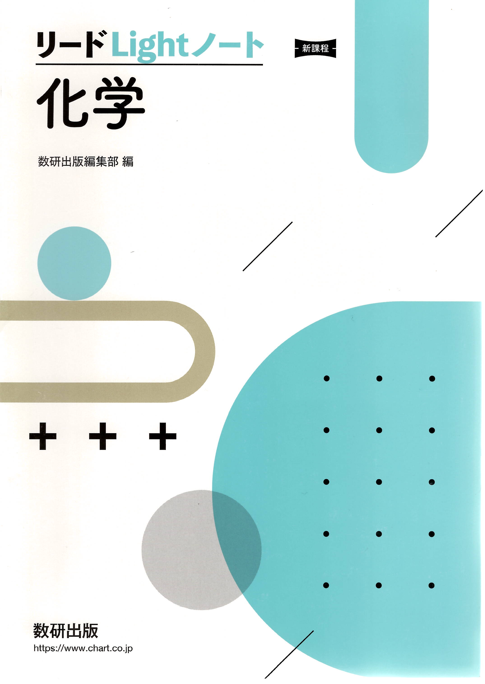

← ポータルに戻る
リードLightノート 化学 (新課程)
全313ページ

目次
p.1–1
第1編 物質の状態
p.2–44
▶
1
第1章 粒子の結合と結晶の構造
p.2
2
第2章 物質の状態変化
p.10
3
第3章 気体
p.18
4
第4章 溶液
p.30
5
編末問題
p.43
第2編 物質の変化
p.45–90
▶
6
第5章 化学反応とエネルギー
p.45
7
第6章 電池と電気分解
p.55
8
第7章 化学反応の速さとしくみ
p.68
9
第8章 化学平衡
p.76
10
編末問題
p.89
第3編 無機物質
p.91–130
▶
11
第9章 非金属元素
p.91
12
第10章 金属元素(Ⅰ)
p.108
13
第11章 金属元素(Ⅱ)
p.116
14
編末問題
p.129
第4編 有機化合物
p.131–168
▶
15
第12章 有機化合物の分類と分析
p.131
16
第13章 脂肪族炭化水素
p.137
17
第14章 アルコールと関連化合物
p.144
18
第15章 芳香族化合物
p.156
19
編末問題
p.167
第5編 高分子化合物
p.169–194
▶
20
第16章 天然高分子化合物
p.169
21
第17章 合成高分子化合物
p.183
22
編末問題
p.193
巻末問題
p.195–202
▶
23
巻末チャレンジ問題
p.195
計算問題の答 / 解答・解説集
p.203–313